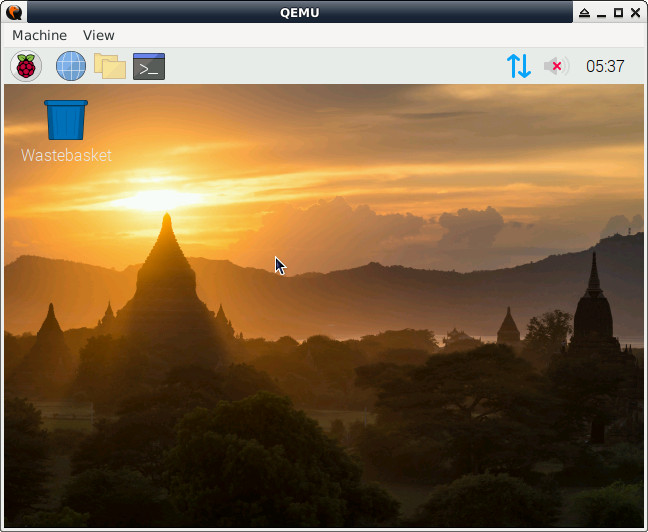

參考資訊：
https://blog.agchapman.com/using-qemu-to-emulate-a-raspberry-pi/
步驟如下：
$ cd $ wget https://github.com/dhruvvyas90/qemu-rpi-kernel/raw/master/kernel-qemu-4.4.34-jessie $ wget http://ftp.jaist.ac.jp/pub/raspberrypi/raspbian_full/images/raspbian_full-2020-02-14/2020-02-13-raspbian-buster-full.zip $ unzip 2020-02-13-raspbian-buster-full.zip $ qemu-img convert -f raw -O qcow2 2020-02-13-raspbian-buster-full.img 2020-02-13-raspbian-buster-full.qcow $ qemu-img resize 2020-02-13-raspbian-buster-full.qcow +6G $ sudo qemu-system-arm -kernel ./kernel-qemu-4.4.34-jessie -append "root=/dev/sda2 panic=1 rootfstype=ext4 rw" -hda 2020-02-13-raspbian-buster-full.qcow -cpu arm1176 -m 256 -M versatilepb -no-reboot -serial stdio
